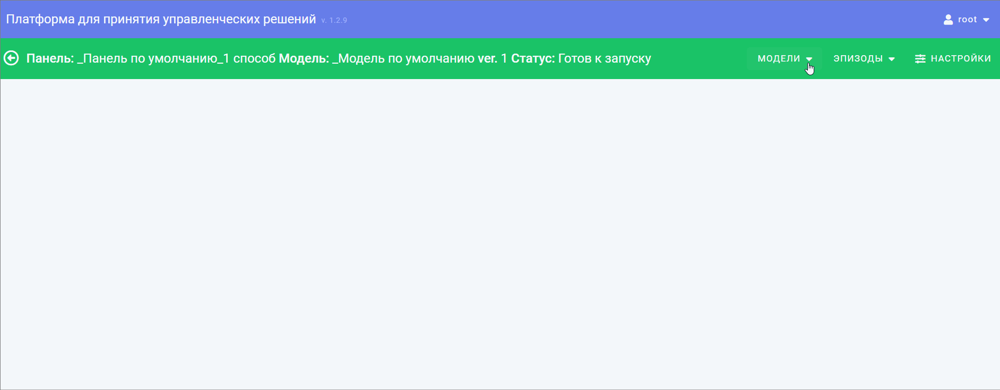
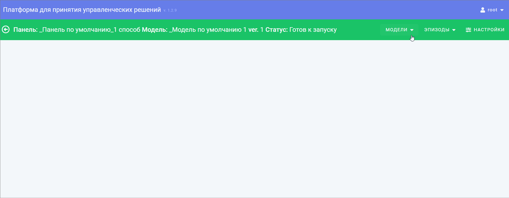
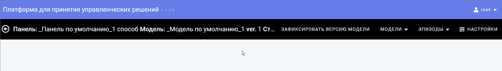
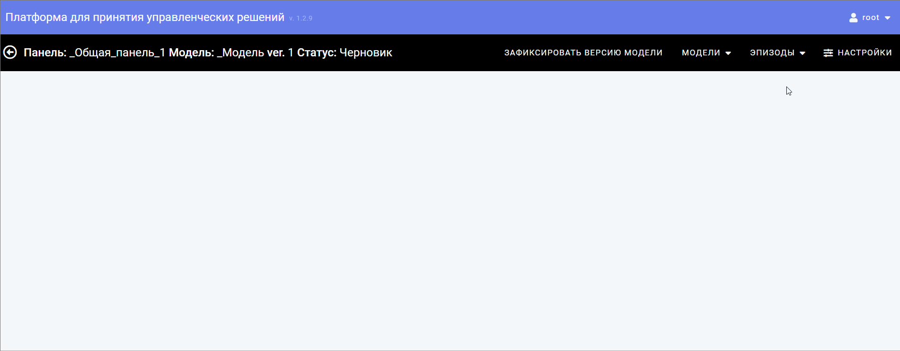
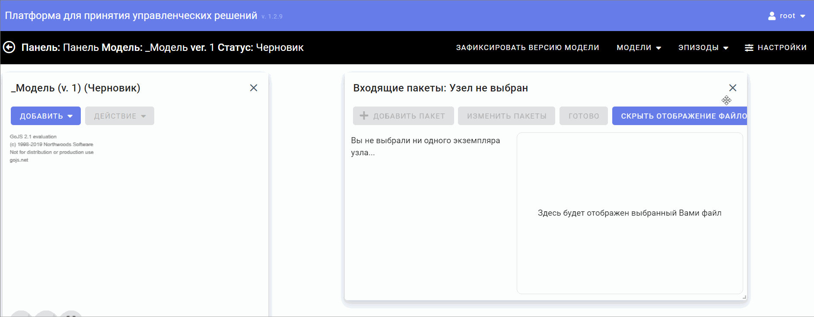
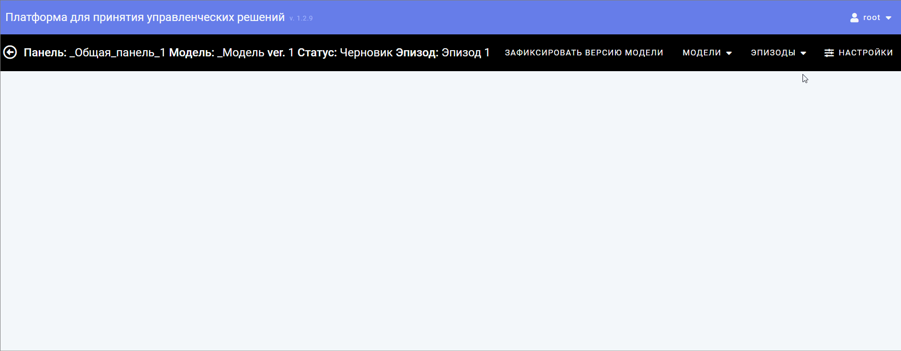

При переходе по пункту меню «Модели» открывается выпадающий список дополнительный действий для того, чтобы:

Менять статус модели

На рабочей странице модели в верхней панели меню располагается кнопка, позволяющая зафиксировать версию модели.
Фиксация меняет статус модели на "Готова к запуску". После нажатия верхняя часть панели и рабочей области меняет цвет на зелёный.

На рабочей странице модели в верхней панели меню располагается пункт меню «Эпизоды», позволяющий производить ряд действий с эпизодами в рамках открытой модели:

Новый эпизод – позволяет создать новый эпизод, привязанный к открытой модели

Редактировать эпизод – позволяет скорректировать название, описание и область видимости модели

Статус эпизода – позволяет изменить текущий статус эпизода модели
Если в модели не был предварительно выбран эпизод – функции редактирования и изменения статуса будут недоступны